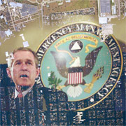

In the wake of hurricane Katrina, many within the government are ducking for cover as the blame game begins. One individual who has been targeted is Michael Brown, the director of the Federal Emergency Management Agency. The Associated Press reported the following:
The top U.S. disaster official waited hours after Hurricane Katrina struck the Gulf Coast before he proposed to his boss sending at least 1,000 Homeland Security workers into the region to support rescuers, internal documents show.
Part of the mission, according to the documents obtained by The Associated Press, was to ``convey a positive image'' about the government's response for victims.
Acknowledging that such a move would take two days, Michael Brown, director of the Federal Emergency Management Agency, sought the approval from Homeland Security Secretary Michael Chertoff roughly five hours after Katrina made landfall on Aug. 29.
Before then, FEMA had positioned smaller rescue and communications teams across the Gulf Coast. But officials acknowledged the first department-wide appeal for help came only as the storm raged.
Brown's memo to Chertoff described Katrina as ``this near catastrophic event'' but otherwise lacked any urgent language. The memo politely ended, ``Thank you for your consideration in helping us to meet our responsibilities.'' (No pagination)
Michael Brown is not the only one with a bull's eye on his chest. Former Clinton advisor Sydney Blumenthal also got in on the fun, placing blame squarely on the President's shoulders:
In 2001, FEMA warned that a hurricane striking New Orleans was one of the three most likely disasters in the U.S. But the Bush administration cut New Orleans flood control funding by 44 percent to pay for the Iraq war. (No pagination)
Many in the mainstream media have interpreted these revelations the same way: gross incompetence on the part of the government. Apparently, Uncle Sam cannot get a thing right these days. What the media has completely missed (or ignored) is how certain factions within government could use the Katrina catastrophe to introduce social changes previously unthinkable. There is a discomforting possibility that Americans must consider in light of the fact that there is no one else looking out for their best interest. It is the possibility that warnings were ignored and assistance was intentionally delayed to create a pretext for unprecedented government growth.
One supporter of this contention is Paul Craig Roberts, the former Assistant Secretary of the Treasury. On the 5th September 2005 Alex Jones show, Roberts: "agreed that FEMA has deliberately withheld aid, and cut emergency communication lines, and automatically made the crisis look worse in order to empower the image of a police state emerging to 'save the day'" (Watson and Jones, no pagination). Steve Watson and Alex Jones also report:
Roberts further commented "There is no excuse for this, we have never had in our history the federal government take a week to respond to a disaster...this is the first time ever that the help was not mobilized in advance. The proper procedure is that everything is mobilized and ready to go." (No pagination)
Roberts can hardly be called a conspiracy theorist. The former Assistant Secretary of the Treasury has recognized a certain game plan at work in the Katrina situation. This game plan has been used for centuries. Researcher Ralph Epperson elaborates:
The first step consisted of having the conspiracy's own people infiltrate the government (the "pressure from above.")
The second step was to create a real or alleged grievance, usually through either an action of government or through some situation where the government should have acted and didn't.
The third step consisted in having a mob created by the real or alleged grievance that the government or the conspiracy caused demand that the problem be solved by a governmental action (the "pressure from below.")
The fourth step consisted in having the conspirators in the government remedy the real or alleged situation with some oppressive legislation.
The fifth step is a repeat of the last three. The government does not solve the problem and the mob demand more and more legislation until the government becomes totalitarian in nature by possessing all of the power. (37)
If this method were fully implemented, it would be no exaggeration to describe the end result as being a Soviet-style America. One of the government agencies that have much to gain from the execution of this technique is FEMA.
Michael Brown may become a sacrificial lamb. However, the Agency he heads, FEMA, has much to gain from the Katrina catastrophe. The hurricane disaster may lead to calls for increasing FEMA's budget and power. In a hopes of silencing his critics, the President may favor such a move. America would then fall back to sleep, believing FEMA had its back covered in the event of another disaster. However, several researchers have recognized that FEMA has little to do with emergency relief. One such individual was deceased researcher Jim Keith. In his book, Black Helicopters Over America, Keith noted the following concerning FEMA:
FEMA is intended to assume the powers of government during "emergencies," even to the extent of taking over the powers of the President, if the situation is believed to warrant it. The organization is located in the top secret National Security Agency facility in Fort Meade, Maryland. In its more benign aspects, FEMA is seen as an "umbrella" agency that, during times of disaster or natural cataclysm, will step into to throw the stricken populace life preservers. But there are aspects of FEMA which have some worried, one being that only a small percentage, less than 10% of FEMA employees according to a Congressional investigation, is engaged in anything having to do with disaster relief. So what the hell is FEMA doing behind those closed doors at Fort Meade? Among other things, the agency is engaged in compiling computer records on millions of Americans, to provide a database for CAPS, Crisis Action Programs, to be deployed whenever the non-elected bureaucrats of FEMA anticipate something which might compromise almighty COG, what they term the "Continuity of Government." (108)
Was Keith merely being an alarmist when he penned these words? In his book The Triangle of Death, former DEA agent Michael Levine records a conversation he had with a CIA agent that reinforces Jim Keith's contention:
"How can you be so good at what you do and have so little understanding of what really pulls your strings? Don't you realize that there are factions in your government that want this to happen - an emergency situation too hot for a constitutional government to handle."
"To what end?" I asked.
"A suspension of the Constitution, of course. The legislation is already in place. All perfectly legal. Check it out yourself. It's called FEMA. Federal Emergency Management Agency. 'Turn in your guns, you antigovernment rabble rousers. And who would be king, Michael?" (353)
In an interview with William Norman Grigg, Levine made it clear that this account was not fictitious:
According to Levine, this shocking exchange is not the product of an imagination fed by alarmist myths. "That scenario…came from a specific conversation I had with a CIA officer in Argentina in 1979," Levine informed The New American. "There was a small group of us gathered for a drinking at the CIA guy's apartment. There were several Argentine police officers there as well; at the time, Argentina was a police state in which people could be taken into custody without warning, tortured, and then 'disappeared.'"
"At one point my associate in the CIA said that he preferred Argentina's approach to social order, and that America should be more like that country," Levine continues. "Somebody asked, 'Well, how does a change of that sort happen?' The spook replied that it was necessary to create a situation of public fear - a sense of impending anarchy and social upheaval…"(11)
The lack of response on the part of the government to hurricane Katrina created a situation just like that described by Levine's CIA acquaintance. An August 31, 2005 WWLTV news report seems to suggest that the situation had the desired effect:
Disgusted and furious with the lawlessness of looters who have put fear into citizens, New Orleans Mayor Ray Nagin declared Martial Law in the city and directed the city's 1,500 person police force to do "whatever it takes" to regain control of the city.
Nagin said that Martial Law means that officers don't have to worry about civil rights and Miranda rights in stopping the looters. (No pagination)
With the proper pretext now in place, FEMA could enter the scene. Lieutenant-general Carl A. Strock of the Army Corps of Engineers informed the press that FEMA was heading up the federal response: "Ultimately, the corps is directed, along with 15 other agencies, by the Federal Emergency Management Agency. 'It is FEMA who is really calling the shots and setting priorities here,' General Strock said" (Revkin, no pagination).
Indeed, FEMA is calling all the shots in New Orleans. In the event of a larger crisis, the agency's powers could be further augmented by Executive Order 11051. This Executive Order would allow FEMA to enact other Executive Orders, extending the organization's control over numerous state and federal functions. This control would overarch education, welfare, and health services (Executive Order 11051, no pagination). In addition, FEMA would wield substantial authority over America's financial institutions. The agency would regulate wages, credit, salaries, and the flow of capital (Executive Order 11051, no pagination). The nation's means of production and distribution would also be commandeered (no pagination). In short, the infrastructure of the United States would be effectively controlled by one omnipotent governmental entity. FEMA is a dictator's wet dream, and with Katrina it is starting to be given teeth.
The lesson to be learned from Katrina is fairly obvious. In the event of a catastrophe, we cannot depend on the government to be our savior. The politics of disaster are not about relief for the victims. They are about the acquisition of power.
Paul D. Collins has studied suppressed history and the shadowy undercurrents of world political dynamics for roughly eleven years. In 1999, he completed his Associate of Arts and Science degree. He is working to complete his Bachelor's degree, with a major in Communications and a minor in Political Science. Paul has authored another book entitled The Hidden Face of Terrorism: The Dark Side of Social Engineering, From Antiquity to September 11. Published in November 2002, the book is available online from www.1stbooks.com, barnesandnoble.com, and also amazon.com. It can be purchased as an e-book (ISBN 1-4033-6798-1) or in paperback format (ISBN 1-4033-6799-X).He also co-authored the book, The Ascendancy of the Scientific Dictatorship: An Examination of Epistemic Autocracy, From the 19th to the 21st Century, which is available online here.
"The near monopoly of power once enjoyed by sovereign entities is being eroded ... states must be prepared to cede some sovereignty to world bodies ... Globalization thus implies that sovereignty is not only becoming weaker in reality, but that it needs to become weaker ... The goal should be to redefine sovereignty for the era of globalization, to find a balance between a world of fully sovereign states and an international system of either world government or anarchy."
Richard Haass, President of the Council on Foreign Relations, Feb. 21st, 2006
"The real danger is the gradual erosion of individual liberties
through automation, integration, and interconnection
of many small, separate record-keeping systems,
each of which alone may seem innocuous,
even benevolent, and wholly justifiable."
U. S. Privacy Study Commission, 1977
"We are grateful to the Washington Post, The New York Times, Time Magazine and other great publications whose directors have attended our meetings and respected their promises of discretion for almost forty years. ... It would have been impossible for us to develop our plan for the world if we had been subjected to the lights of publicity during those years. But, the world is now more sophisticated and prepared to march towards a world government. The supranational sovereignty of an intellectual elite and world bankers is surely preferable to the national auto-determination practiced in past centuries."
David Rockefeller, Bilderberg Meeting, June 1991 Baden, Germany
"The very word 'secrecy' is repugnant in a free and open society; and we are as a people inherently and historically opposed to secret societies, to secret oaths and to secret proceedings. We decided long ago that the dangers of excessive and unwarranted concealment of pertinent facts far outweighed the dangers which are cited to justify it."
John F. Kennedy in a speech before the American Newspaper Publishers Association (27 April 1961)